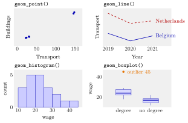

Choosing a Plot Type in ggplot2¶
Definition¶
In ggplot2 the plot type is chosen by the geom, the layer that turns the mapped data into marks. The four basic geoms answer four kinds of question:
| Question | Geom | Mapping |
|---|---|---|
| How are two numeric variables related? | geom_point() (scatter plot) |
aes(x = num1, y = num2) |
| How does a variable change over time? | geom_line() (line plot) |
aes(x = time, y = num), plus color or group for several series |
| How is one numeric variable distributed? | geom_histogram() |
aes(x = num) only |
| How do distributions differ between groups? | geom_boxplot() |
aes(x = group, y = num) |
A histogram divides the x-axis into bins of equal width and draws a bar whose height is the number of observations in each bin. A box plot draws a box from the first to the third quartile with a line at the median; the whiskers reach the most extreme values that lie at most 1.5 box lengths beyond the box, and values further out are drawn as separate points. Base R offers quick versions without layers: plot(x, y) and hist(x).
Interpretation¶
The right plot follows from the question and from the type of the variables. Two numeric columns call for points; a numeric column measured over time calls for a line, because the order of the observations carries meaning; one numeric column on its own calls for a histogram; a numeric column split by a categorical one calls for box plots side by side.

The four panels draw the four Examples. The scatter (Example 1) shows emissions that rise together in two sectors. The two lines (Example 2) show one series per country, which needs a color mapping. The histogram (Example 3) has bars of heights 3, 5, 5, 3, 2, 1, 1 over bins of width 5 starting at 10, a distribution with a long right tail. The box plots (Example 4) compare two groups: medians 24 and 17, and one outlier at 45.
A histogram depends on its bins. Without binwidth or bins, ggplot2 uses 30 bins and prints a message asking for a better value; with few observations, 30 bins leave most bars at height 0 or 1 and hide the shape. A box plot summarises each group by five numbers, so it compares groups well but hides the number of observations and any gaps or second peaks; with very small groups, show the points as well.
These plots are the data side of ideas from probability theory. A histogram of a sample estimates the shape of the density of the variable, and the quartiles in a box plot are sample versions of the quantiles at levels 0.25, 0.5 and 0.75. Later in the course, histograms are rescaled to density units and compared with a theoretical density curve.
The most common line-plot mistake is plotting several series without telling ggplot2 which rows belong together. geom_line() then connects all points in the order of x, jumping between series at every x value (Example 2).
Key Results¶
geom_point(): one point per row; use for the relationship between two numeric variables.geom_line(): connects points in increasing order of x within each group; several series needcolor = seriesorgroup = seriesinaes().geom_histogram(): needs only an x mapping; setbinwidthorbins, otherwise 30 bins are used and a message is printed.geom_boxplot(): box from first to third quartile, line at the median, whiskers to the most extreme points within 1.5 interquartile ranges of the box, outliers as points.- Several geoms can be layered on one plot, for example
geom_line() + geom_point(). - Base R
plot()andhist()give fast exploratory plots; ggplot2 gives more control for reports.
Examples¶
All examples use small made-up data and start with library(tidyverse).
1. Relationship: geom_point(). Transport against buildings emissions in six country–years:
co2 <- tibble(
Country = c("Belgium", "Belgium", "Germany", "Germany", "Netherlands", "Netherlands"),
Transport = c(22, 24, 146, 148, 30, 31),
Buildings = c(20, 21, 110, 115, 25, 24)
)
ggplot(co2, aes(x = Transport, y = Buildings)) + geom_point()
cor(co2$Transport, co2$Buildings)
#> [1] 0.9995204
The six points lie almost on a straight line, in two clusters: four points with small values and the two German points far to the upper right. In these data a country with high transport emissions also has high buildings emissions, and the correlation of almost 1 summarizes that in one number.
2. Pitfall: lines for several series.
d <- tibble(Country = rep(c("Belgium", "Netherlands"), each = 3),
Year = rep(2019:2021, times = 2),
Transport = c(25, 22, 24, 33, 29, 30))
ggplot(d, aes(x = Year, y = Transport)) + geom_line()
ggplot(d, aes(x = Year, y = Transport, color = Country)) + geom_line()
The first plot is one zigzag line: in 2019 it jumps vertically from 25 to 33, then runs down to 22, jumps up to 29, and so on, because all six rows form a single group sorted by year. The second plot draws two separate lines, Belgium falling from 25 to 22 and rising to 24, the Netherlands from 33 to 29 to 30, with a legend for Country.
3. Distribution: geom_histogram(). Twenty hourly wages:
wages <- tibble(wage = c(12, 14, 15, 16, 17, 18, 18, 19, 21, 22,
22, 23, 24, 26, 27, 29, 31, 34, 38, 45))
ggplot(wages, aes(x = wage)) + geom_histogram()
#> `stat_bin()` using `bins = 30`. Pick better value with `binwidth`.
ggplot(wages, aes(x = wage)) + geom_histogram(binwidth = 5, boundary = 10)
layer_data(last_plot())$count
#> [1] 3 5 5 3 2 1 1
With binwidth = 5 and bin edges at 10, 15, …, 45 the bars have heights 3, 5, 5, 3, 2, 1, 1: most wages lie between 15 and 25 and a few high ones stretch the right tail. A value on an edge, such as 15, is counted in the bin to its left. The default 30 bins spread the same 20 values over bars of height 0, 1 or 2: 12 of the 30 bins are empty.
4. Comparing groups: geom_boxplot().
w2 <- tibble(degree = rep(c("no degree", "degree"), each = 7),
wage = c(12, 14, 15, 17, 18, 19, 22,
18, 21, 23, 24, 26, 29, 45))
ggplot(w2, aes(x = degree, y = wage)) + geom_boxplot()
w2 %>% group_by(degree) %>%
summarise(q1 = quantile(wage, 0.25), median = median(wage), q3 = quantile(wage, 0.75))
#> # A tibble: 2 × 4
#> degree q1 median q3
#> <chr> <dbl> <dbl> <dbl>
#> 1 degree 22 24 27.5
#> 2 no degree 14.5 17 18.5
The box for "degree" runs from 22 to 27.5 with the median line at 24; its upper whisker stops at 29, and 45 is drawn as a separate point because it lies more than above the box. The "no degree" box runs from 14.5 to 18.5 around a median of 17, with whiskers to 12 and 22. The groups appear in alphabetical order, "degree" first.
Prerequisites¶
Related Concepts¶
- Pivoting Between Wide and Long Data
- Grouped Summaries
- Checking Distributions by Simulation
- Quantile Function
- Probability Density Function
Sources¶
- Programming for EOR · Week 4
- Lecture 4 script, Data Wrangling with the tidyverse & Visualisation with ggplot2: Plotting with ggplot2, Other plot types and base R plots
Aliases: geoms, geom, geom_point(), geom_line(), geom_histogram(), geom_boxplot(), box plot in R, histogram in R, line plot, scatter plot, hist(), plot() Keywords: geom_point(), geom_line(), geom_histogram(), geom_boxplot(), which plot for which question
Last updated: 10 November 2026 16:43
Choosing a Plot Type in ggplot2Checking Distributions by Simulationggplot2 and the Grammar of GraphicsSummary Statistics in RMedianPivoting Between Wide and Long DataGrouped SummariesQuantile FunctionProbability Density Function